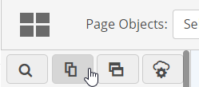
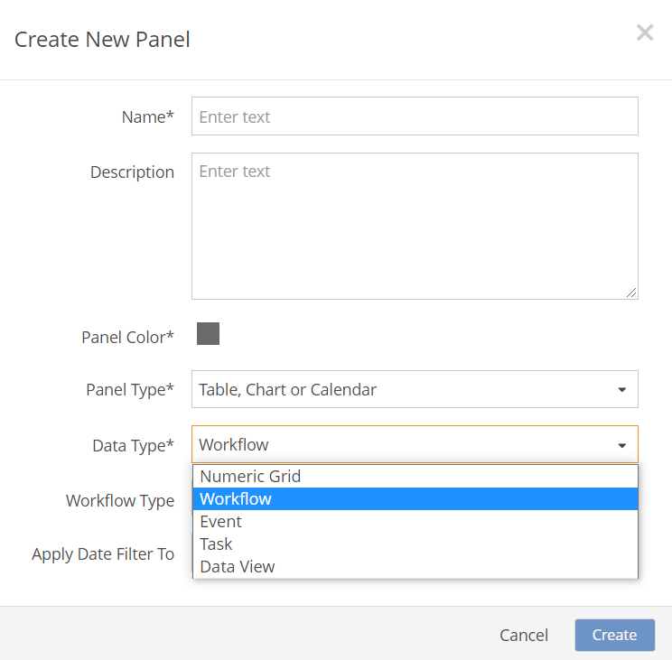
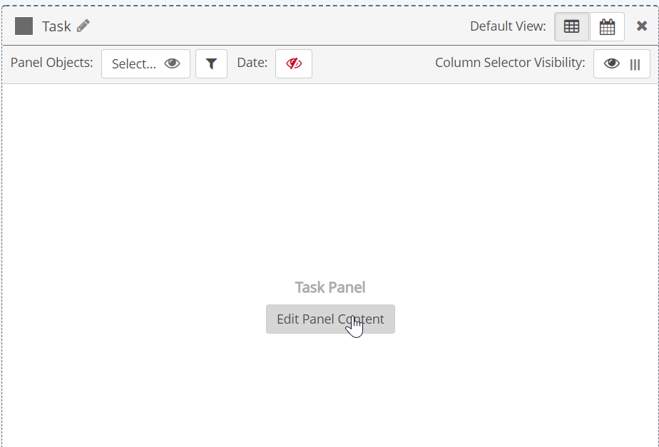
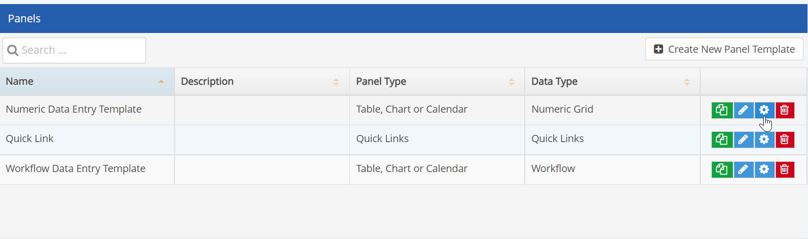
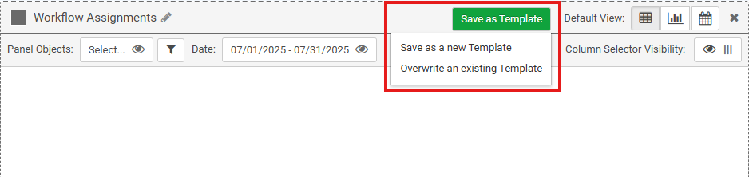

Panel Templates allow you to pre-configure panels with panel properties and default object filters so that the panel can be copied to various portal pages with minimal configuration. You can define common settings one time and then apply those settings when a panel is added to a page. You can create a new panel template from the panel library or save a panel as a template during configuration.
Changes to a panel template will not be applied to panels previously created from the template.
Users should be either in the Administrators group or in the package role Portal Administrator to be able to access Page and Panel libraries.
To create a panel template:
Select the Panel Library icon at the top of the page menu.

Enter a name and an optional description.
Choose a color from the color palette (applies to the top bar on the panel).
Select the Data Type: Workflow, Event, Numeric Data or Task.
For a Workflow Panel, select:
For an Event Panel, select:
Select the Data Type. Types include Workflow, Numeric Grid, Event or Task.

For a Workflow Panel, you will need to select:
Workflow Type: Select one or more workflow types.
If you do not select a workflow type, all workflows will be included.
For an Event Panel, you will need to select:
Event Templates: Select one or more Event Templates.
If you do not select an event template, all events will be included.
For a Task Panel, you may optionally select:
Task Templates (optional): Select one or more Task Templates.
If you do not select a Task Template, all Task Templates will be included, as well as tasks without a task template.
You can search workflow types, event templates or task templates by name by entering a few characters, then selecting from the matches offered. If no selections are made, all workflows or events will be displayed.
Select Create.
While still in Settings mode, you can edit the panel configuration by clicking Edit Panel Content.

See configuration details for each data type:
You can search workflow types or event templates by name by entering a few characters, then selecting from the matches offered. If no selections are made, all workflows or events will be displayed.
After creating the panel template, you can further configure the panel template by clicking the gear icon in the template list.

Once a panel template has been added to a page, the panel configuration may be edited on the page. Edits made to the panel on a page will only apply to that instance of the panel. Edits made to the template will only apply to new panels created from the template, not existing instances.
When configuring a panel, you can save the configuration as a template from the configuration settings.
To save a panel as a template:
